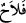
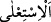

insanların bir hizaya sokulmasıdır. İnsan, ağaç ve diğer eşyalar için kullanılır.
el-İrşâd’da der ki: “Belki de buluşma yeri, geniş bir meydandı. Mûsâ (a.s.) bu geniş
meydanın bir kenarında oradakilere hitâb etti. Sihirbazlar da başka bir köşede gizlice
işlerini planladılar. Sonra da âyette geçtiği üzere herkesin meydanın ortasında
toplanması emredildi.
“Muhakkak ki bugün, üstün gelen kazanmıştır.”
, gayeye ulaşmak ve arzusunu
elde etmektir. “
(üstün gelme)”, yerilen üstünlüğü taleb etme olduğu gibi
yükseklik/îtibar isteme mânâsına da kullanılabilir. Âyet her iki mânâya da muhtemeldir.
Yani gâlib olan kazanmış ve halk arasında yüce bir mevki elde etmiştir.
el-İrşâd’da der ki: “Onlar bu sözleriyle birbirlerini bütün güçlerini sonuna kadar
kullanmaya teşvik etmek üzere Fir’avn’un vâd ettiği mükâfâtı ve onları kendisine yakın
kılmasını; “üstün gelen”in kendilerinin tamamı veya bir bölümü olacağını
kasdediyorlardı.
Fakir (Bursevî) der ki: Burada işâret vardır ki ilimlerden ve sihir gibi sebeplerden
yasaklananlar, sadece dünyayı ve dünya malını toplamak için olan ilimlerdir, yoksa
âhireti, nîmetlerini ve Allâh’ın rızâsını elde etmek için olanlar değil. Onun için Allah
Teâlâ: “O’na ancak güzel sözler yükselir. Onları da sâlih amellere ulaştırır.” (Fâtır,
35/10) buyurmuştur. Şerîatın yasak ettiği fiillerle mânevî ve uhrevî dereceleri elde
etmeye çalışanların çabaları boşa gider, onlar kurtuluşa eremez ve yorgunlukları
yanlarına kâr kalır.
Taklid ehli Fir’avn ve onun sihirbazlarının yolunu takip ederler. Onlar tahkîk ehli
hakkında: “Bunlar sizi şeyhlik makamından, avamın yanındaki yüksek mevkilerinizden
mahrum etmek, insanların size olan teveccühünü yok etmek, kavminizin yönetici ve
idârecilerinin şereflilerinin, ma‘rifet sâhiplerinin, zenginlerin ve varlık sâhiplerinin size
gösterdiği yakınlığı gidermek istiyorlar.” derler. Bunun için çeşitli hileler yaparlar ve
ağızlarıyla Allâh’ın nurunu söndürmek isterler. Kâfirler, yani Allâh’a gizli şirk ile ortak
koşanlar istemese de Allah nûrunu tamamlayacaktır (bk. es-Saff, 61/8-9).
Mesnevî’de şöyle denir:
Kim Allah mumunu üflerse
O mum sönmez, üfleyenin ağzı yanar.
Güneş gibi yüce olarak yaratılan, hiçbir hile ile süflî olmaz. Kezâ toprak süflî
yaratılmıştır, hiçbir zaman semâvî olmaz.
Molla Câmî der ki:
Başlarında devlet külâhı olsa da sefihlerin kıymeti yoktur
Zamanın devri öyle sefihleri devlet burcuna yükseltir
Toprak zâtı îtibâriyle süflîdir, kendi tab‘ı üzere havaya gitmez
Rüzgara yoldaş olur, semâya doğru baş çeker gider